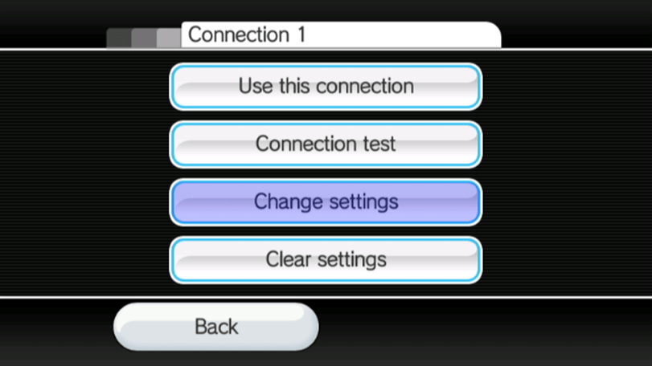

str2hax
영어로 된 도움말을 원하시면 디스코드의 RiiConnect24에서 도움을 요청하세요.
튜토리얼에 관한 질문이 있다면, Wii Mini 해킹 디스코드 서버 에 가입하거나(권장) [email protected]에 이메일을 보내세요.
커스텀 DNS 서버를 막는 ISP (인터넷 서비스 제공자) 나 네트워크 환경인 경우, str2hax는 작동하지 않을 것이며 다른 취약점을 이용해야 합니다.
str2hax는 Wii의 최종 사용자 라이선스 동의서를 이용해서 실행되는 Wii의 취약점입니다. 아무것도 필요하지 않으나 Wii의 DNS를 변경할 수 있게 하는 인터넷 연결이 필요합니다.
필요한 것
- 인터넷 연결이 있는 Wii
방법
섹션 I - 연결
이 취약점은 취약점을 포함하는 서버에 연결하기 위해 DNS를 연결해야 합니다.
Wii 옵션으로 이동하세요.
Wii 설정으로 이동하세요.
페이지 2로 이동하고,인터넷을 클릭하세요.
연결 설정으로 이동합니다.
- 현재 연결을 선택하세요.

설정 편집으로 이동합니다. DNS 자동 연결(IP 주소가 아님) 으로 이동해서끄기를 선택하고,고급 설정으로 들어갑니다.
- Type in
18.188.135.9as the primary DNS. - Type in
18.188.135.9as the secondary DNS. 결정을 선택하고,저장을 선택합니다.
OK를 눌러 연결 테스트를 합니다.
- 연결 테스트가 성공했다면, Wii 업데이트를
아니요를 눌러 건너뜁니다.
- 성공적이지 않았다면, 다른 취약점을 이용하세요.
- 연결 테스트가 성공했다면, Wii 업데이트를
섹션 II - 취약점 실행하기
- 마지막으로,
인터넷섹션에 들어가서이용 약관또는약관/계약에 들어가서,예를 누르세요. - 연한 파랑 배경에서 마이 리틀 포니 사진을 본다면, 올바르게 설정한 겁니다. 취약점이 실행될 때 까지 1-2분을 기다리세요 (1분 25초 정도 걸림). 이 취약점은 계속할 수 있도록 HackMii 설치 도우미를 다운로드합니다.
HackMii 설치 마법사가 실행되지 않고 뻗거나 (커서를 움직일 수 없음) 1-2분이 지나도 실행되지 않는다면, Wii를 재시작 하고 작동을 재시도하세요.
If you have installed a mod like CTGP Revolution or Project+, str2hax may load that instead. If it does, restart your Wii and try again without your SD card inserted.